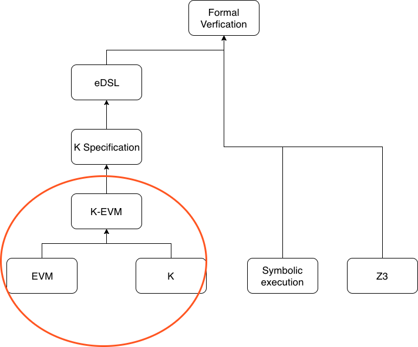
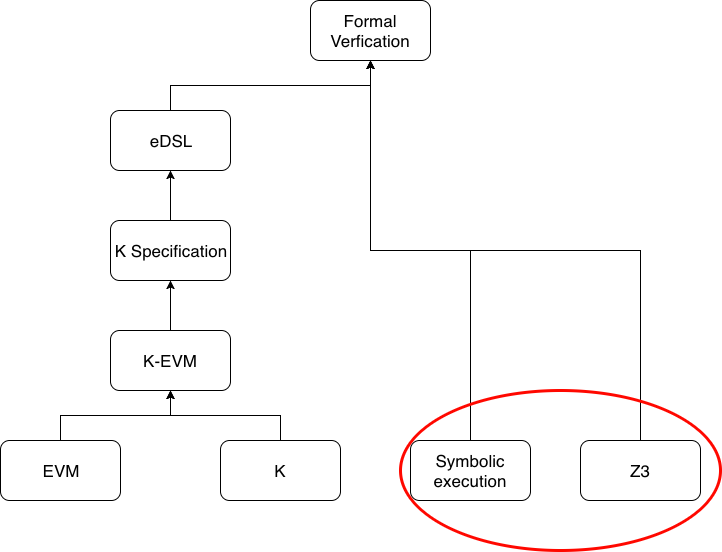
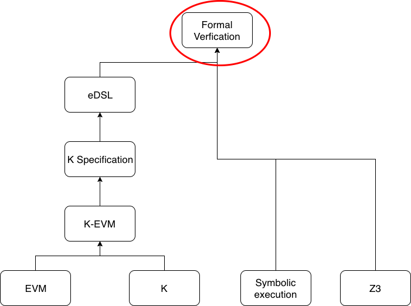

<!doctype html>
<html lang="en">
    <head>
        <meta charset="utf-8">
        <title>RevealJS : /Users/dteiml/dev/presentations/formal-verification-part2/slides.md</title>
        <link rel="stylesheet" href="css/reveal.css">
        <link rel="stylesheet" href="css/theme/league.css" id="theme">
        
       
        <!-- For syntax highlighting -->
        <link rel="stylesheet" href="lib/css/none.css">

        

        <!-- If the query includes 'print-pdf', use the PDF print sheet -->
        <script>
          document.write( '<link rel="stylesheet" href="css/print/' + ( window.location.search.match( /print-pdf/gi ) ? 'pdf' : 'paper' ) + '.css" type="text/css" media="print">' );
        </script>

        <style type="text/css">
            @page {    
              margin: 0;
              size: auto; 
            }
        </style>

        <script>
         if(window.location.search.match( /print-pdf-now/gi )) {
           window.print();
         }
      </script>

    </head>
    <body>

        <div class="reveal">
            <div class="slides"><section  data-markdown><script type="text/template">
## Formal Verification
## (Part 2)

<small>

Dominik Teiml

dominik@gnosis.pm

[dteiml.github.io/presentations](https://dteiml.github.io/presentations) $\rightarrow$ Formal Verification Part 2

</small>
</script></section><section ><section data-markdown><script type="text/template">
## Recap
</script></section><section data-markdown><script type="text/template">

</script></section><section data-markdown><script type="text/template">
- EVM
    - 140 (75) opcodes
<!-- Most popular ones are stack manipulations -->
<!-- Most important ones are those that have effect on Ethereum state  -->
<!-- - SELFDESTRUCT -->
<!-- - SSTORE -->
<!-- - CREATE -->
<!-- - CALL -->
<!-- - CALLCODE -->
<!-- - DELEGATECALL  -->
- K language
<!-- used to define programming languages and virtual machines -->
    - `syntax`, `rule`, `configuration`
- K-EVM
    <!-- - Ethereum Virtual Machine defined in K -->
    - Configuration comprises:
        - `callState`
        - `accounts`
        - block Info
    <!-- - Semantics for each opcode execution -->
</script></section><section data-markdown><script type="text/template">

</script></section><section data-markdown><script type="text/template">

</script></section><section data-markdown><script type="text/template">

<!-- Said in another way, the goals of this talk are to understand how K works behind the scenes and to see how K is used in practice-->

<!-- So let's start with symbolic execution -->
</script></section></section><section ><section data-markdown><script type="text/template">
## Symbolic execution
</script></section><section data-markdown><script type="text/template">
- A program can be executed *concretely* 
<!-- - (with specific arguments) -->
- Or *symbolically* - arguments are treated as symbols
<!-- (or variables) -->
<!-- So during symbolic execution, we execute the program symbolically -->
- We execute the program
  <!-- control-flow graph of the pgm -->
</script></section><section data-markdown><script type="text/template">
- Branching can occur at conditional statements 
<!-- like if, while, ... -->
- Can also occur elsewhere
    - e.g. consider the EVM opcode ADD
  <!-- (or equivalently, the high-level Solidity operator `+`) -->
    - If both arguments $A, B$ are unconstrained EVM words ($[0, 2^{256})$), the image can either be $A+B$ or $A+B-2^{256}$.
    - For EXP there will be an enormous amount of possibilities
<!-- (this is called path explosion) -->
</script></section><section data-markdown><script type="text/template">
- A "path condition" are the constraints that make the path "feasible" 
<!-- - (reachable) -->
- Updating the path condition is equivalent to branching
- A solution to the path condition is a test input
  <!-- for that path -->
</script></section><section data-markdown><script type="text/template">
So K framework uses symbolic execution to prove program correctness. But how does it actually prove it?
</script></section></section><section ><section data-markdown><script type="text/template">
## Z3
</script></section><section data-markdown><script type="text/template">
<!-- Let's take a step back -->

SAT

- Problem of the satisfiability of boolean formulas
- E.g. does there exist an *interpretation* for $A,B,C$ such that $\lnot A \lor (B \land C)$?
- Known to be NP-Complete by Cook-Levin Theorem
</script></section><section data-markdown><script type="text/template">
<!-- - If we want to find a solution to a SAT problem, we use a SAT solver -->
SAT Solvers
<!-- which run in hyperpolynomial time -->
- Takes as input a CNF boolean expression and outputs either a solution or UNSAT
- We use CNF because it better corresponds to most use cases (e.g. path conditions :))
- And because there is a polynomial-time reduction from SAT to 3-SAT (cf. Karp)
- (NB DNF can be solved in polynomial time)
<!-- but no algorithm exists to transform an arbitrary boolean formula to DNF) -->
<!-- In most of the above, finding such an algorithm would imply P=NP, so it's very likely we'll never find it :( -->
</script></section><section data-markdown><script type="text/template">
<!-- - For formal verification we need more expressiveness than just boolean formulas -->
SMT Solvers

- Satisfiability *modulo theories* 
<!-- Theory here has its mathematical meaning -> axiomatic system -->
- E.g. integer arithmetic
<!-- Again -->
- The solver will either output a solution or UNSAT
</script></section><section data-markdown><script type="text/template">
<!-- So how is this useful for formal verification? -->
- How do we *prove* positive properties (over a set of integers)?
    - e.g. let $x$ be even. Prove $x^2 \equiv 0 \mod 4$
- We can feed the variable ($x$), constraint (parity) and the equation ($x^2 \not\equiv 0 \mod 4$) 
  
  into an SMT-Solver 

- If it outputs UNSAT, we proved the property :P
</script></section><section data-markdown><script type="text/template">
Z3 is an instantiation of an SMT-solver
<!-- In practice, SMT-Solvers first try to solve the SAT problem and if that is satisfiable then they see if the constraints posed by the propositions are consistent -->
</script></section></section><section ><section data-markdown><script type="text/template">
## Intermezzo
</script></section><section data-markdown><script type="text/template">
High-level overview:
- K executes your program symbolically, branching if necessary
- At some point, Z3 will try to prove the post-condition
- If it can do so for all paths, the spec is proved
- If at least one path has an irreducible term, it terminates and spec is not proved
</script></section><section data-markdown><script type="text/template">
<!-- Essentially -->

Formal verification = formal specification (manual) + formal proof (automated)
</script></section></section><section ><section data-markdown><script type="text/template">
## K Specifications
<!-- In this section we'll connect what we've discussed to how to actually use K -->
</script></section><section data-markdown><script type="text/template">
A K specification usually involves exactly one *spec rule*
- Unlike *semantic rules* which specify rewrite rules, it specifies what we want to prove
- In particular, a pre-condition 
    - initial contents of configuration cells
    <!-- Which depends on the language e.g. EVM -->
- and post-condition
    - desired contents
    <!-- of configuration cells after execution -->
- which are separated by a `=>`
- Pre- and post-conditions can be constrained 
<!-- Using requires and ensures keywords -->
- Together, the pre- and post-conditions (when used for program correctness) express the intended behavior of the contract
</script></section><section data-markdown><script type="text/template">
<!-- So a K specification must contain pre- and post-conditions separated by => -->

<!-- Let's look at an example -->

<!-- Let's look at an example -->

<!-- Let's say we have a super simple imperative language IMP that has a configuration -->

```
configuration <T>
                <k> $PGM:Pgm </k>
                <state> .Map </state>
              </T>
```

Then a possible K specification would be

```
rule <T>
        <k>Y = X; => . </k>
        <state> X |-> X_VALUE  _:Map => Y |-> X_VALUE _:Map </state>
     </T>
```
</script></section><section data-markdown><script type="text/template">
We can also include constraints on our variables.

```
rule <T>
        <k> Y = X % 2; => . </k>
        <state> X |-> X_VALUE _:Map => Y = 0 _:Map </state>
     </T>
    requires #even(X_VALUE)
```

<!-- And then twe would have another one for odd X -->
<!-- Note that each specification tests one case for a function -->
</script></section><section data-markdown><script type="text/template">
<!-- Let's go a bit deeper -->
What are the different possibilities in one cell?
<!-- The most popular are -->
</script></section><section data-markdown><script type="text/template">
No rewrite

<small>

| Syntax         | Examples                                                                                                         |
| -------------- | ---------------------------------------------------------------------------------------------------------------- |
| Value type     | `#abiCallData("transfer", #address(TO_ID), #uint256(VALUE))`, `<code> #parseByteStack("...") </code>`, `<callValue> 0 </callValue>`, `<mode> BYZANTIUM </mode>`                |
| Anonymous var  | `<callStack> _ </callStack>`, `<gasPrice> _ </gasPrice>`, `<blockhash> _ </blockhash>`, `<balance> _ </balance>` |
| Named variable | `<callValue> CALL_VALUE </callValue>`, `<caller_id> MSG_SENDER </caller_id>`                                     |

</small>
</script></section><section data-markdown><script type="text/template">
With rewrite sign

<small>

|   Examples    |
|  ---  |
|  `<k> #execute => #halt </k>`,      |
|  `<output> _ => #asByteStackInWidth(1, 32) </output>`     |
|  `<pc> 0 => _ </pc>` <br> `<wordStack> .WordStack => _ </wordStack>` <br> `<gas> 100000 => _ </gas>`    |


</small>

```
#hashedLocation("Solidity", 0, CALLER_ID) |-> (BAL_FROM => BAL_FROM -Int VALUE)
#hashedLocation("Solidity", 0, TO_ID)     |-> (BAL_TO   => BAL_TO   +Int VALUE)
_:Map
```

<!-- Intermezzo: One spec rule tests one case for a function. For simple functions like ERC20 ones, we usually have ~ 2 success cases and ~ 3 failure cases -->
</script></section><section data-markdown><script type="text/template">
<!-- Now that you've seen fragments of it, here's the full specification for transfer-success-1 -->

```
requires "abstract-semantics.k"
requires "verification.k"

module TRANSFER-SUCCESS-1-SPEC
  imports ETHEREUM-SIMULATION
  imports ABSTRACT-SEMANTICS
  imports VERIFICATION

  // transfer-success-1
  rule
    <k> #execute => #halt </k>
    <exit-code> 1 </exit-code>
    <mode> NORMAL </mode>
    <schedule> BYZANTIUM </schedule>
    <analysis> .Map </analysis> // not part of evm

    <ethereum>
      <evm>
        <output> _ => #asByteStackInWidth(1, 32) </output>
        <statusCode> _ => EVMC_SUCCESS </statusCode>
        <callStack> _ </callStack>
        <interimStates> _ </interimStates>
        <touchedAccounts> _ => _ </touchedAccounts>

        <callState>
          <program> #asMapOpCodes(#dasmOpCodes(#parseByteStack("..."), BYZANTIUM)) </program>
          <programBytes> #parseByteStack("...") </programBytes>
          <id> ACCT_ID </id> // contract owner
          <caller> CALLER_ID </caller> // who called this contract; in the begining, origin // msg.sender

          <callData> #abiCallData("transfer", #address(TO_ID), #uint256(VALUE)) </callData>
          <callValue> 0 </callValue>
          <wordStack> .WordStack => _ </wordStack>
          <localMem> .Map => _ </localMem>
          <pc> 0 => _ </pc>
          <gas> 100000 => _ </gas>
          <memoryUsed> 0 => _ </memoryUsed>
          <previousGas> _ => _ </previousGas>

          <static> false </static> // NOTE non-static call
          <callDepth> CALL_DEPTH </callDepth>
        </callState>

        <substate>
          <selfDestruct> _ </selfDestruct>
          <log> _:List ( .List => ListItem(#abiEventLog(ACCT_ID, "Transfer", #indexed(#address(CALLER_ID)), #indexed(#address(TO_ID)), #uint256(VALUE))) ) </log>
          <refund> _ => _ </refund> // TODO: more detail
        </substate>

        <gasPrice> _ </gasPrice>
        <origin> ORIGIN_ID </origin> // who fires tx

        <previousHash> _ </previousHash>
        <ommersHash> _ </ommersHash>
        <coinbase> _ </coinbase>
        <stateRoot> _ </stateRoot>
        <transactionsRoot> _ </transactionsRoot>
        <receiptsRoot> _ </receiptsRoot>
        <logsBloom> _ </logsBloom>
        <difficulty> _ </difficulty>
        <number> _ </number>
        <gasLimit> _ </gasLimit>
        <gasUsed> _ </gasUsed>
        <timestamp> _ </timestamp>
        <extraData> _ </extraData>
        <mixHash> _ </mixHash>
        <blockNonce> _ </blockNonce>

        <ommerBlockHeaders> _ </ommerBlockHeaders>
        <blockhash> _ </blockhash>
      </evm>

      <network>
        <activeAccounts> SetItem(ACCT_ID) _:Set </activeAccounts>

        <accounts>
          <account>
            <acctID> ACCT_ID </acctID>
            <balance> _ </balance>
            <code> #parseByteStack("...") </code>
            <storage>
              #hashedLocation("Solidity", 0, CALLER_ID) |-> (BAL_FROM => BAL_FROM -Int VALUE)
              #hashedLocation("Solidity", 0, TO_ID)     |-> (BAL_TO   => BAL_TO   +Int VALUE)
              _:Map
            </storage>
            <origStorage> _ </origStorage>
            <nonce> _ </nonce>
          </account>
          ...
        </accounts>

        <txOrder> _ </txOrder>
        <txPending> _ </txPending>
        <messages> _ </messages>
      </network>
    </ethereum>
    requires 0 <=Int ACCT_ID    andBool ACCT_ID    <Int (2 ^Int 160)
    andBool 0 <=Int CALLER_ID   andBool CALLER_ID  <Int (2 ^Int 160)
    andBool 0 <=Int ORIGIN_ID   andBool ORIGIN_ID  <Int (2 ^Int 160)
    andBool 0 <=Int CALL_DEPTH  andBool CALL_DEPTH <Int 1024
    andBool 0 <=Int TO_ID       andBool TO_ID     <Int (2 ^Int 160)
    andBool 0 <=Int VALUE       andBool VALUE     <Int (2 ^Int 256)
    andBool 0 <=Int BAL_FROM    andBool BAL_FROM  <Int (2 ^Int 256)
    andBool 0 <=Int BAL_TO      andBool BAL_TO    <Int (2 ^Int 256)
    andBool CALLER_ID =/=Int TO_ID
    andBool VALUE <=Int BAL_FROM
    andBool BAL_TO +Int VALUE <Int (2 ^Int 256)

endmodule
```
</script></section></section><section ><section data-markdown><script type="text/template">
## eDSL
</script></section><section data-markdown><script type="text/template">
<!-- Essentially I've cheated a little -->
<!-- Not everything that you saw above are EVM semantic rules -->
<!-- To make life easier for ourselves, we write specifications in eDSL -->

eDSL:
- easier to write common patterns (derived either from Solidity or from ABI standard)
<!-- In particular, -->
<small>
`#abiCallData("transfer", TO_ID, VALUE)`
`#abiEventLog(ACCT_ID, "Transfer", CALLER_ID, TO_ID, VALUE)`
`#hashedLocation("Solidity", 0, CALLER_ID) |-> BAL_FROM`
</small>
</script></section><section data-markdown><script type="text/template">
- allows us to use eDSL Templates

<blockquote cite="https://github.com/runtimeverification/verified-smart-contracts/blob/0bfebfe7d2d8e4606f778cf76b00ebd536bf3b38/resources/edsl-spec.md#edsl-specification-template">
EVM specifications are written over the full KEVM configuration. However, a large part of the configuration [...] can be shared across specifications. eDSL allows capturing such common portions in the form of a template specification that can be instantiated for each specification.
</blockquote>

</script></section><section data-markdown><script type="text/template">
Need: 1. Spec template

<!-- k file -->

```
  // {RULENAME}
  rule
    <k> {K} </k>
    <exit-code> 1 </exit-code>
    <mode> NORMAL </mode>
    <schedule> BYZANTIUM </schedule>
    <analysis> .Map </analysis> // not part of evm

    <ethereum>
      <evm>
        <output> {OUTPUT} </output>
        <statusCode> {STATUSCODE} </statusCode>
        <callStack> _ </callStack>
        <interimStates> _ </interimStates>
        <touchedAccounts> _ => _ </touchedAccounts>

        <callState>
          <program> #asMapOpCodes(#dasmOpCodes(#parseByteStack({CODE}), BYZANTIUM)) </program>
          <programBytes> #parseByteStack({CODE}) </programBytes>

          <id> ACCT_ID </id> // contract owner
          <caller> CALLER_ID </caller> // who called this contract; in the begining, origin // msg.sender

          <callData> {CALLDATA} </callData>

          <callValue> {CALLVALUE} </callValue>
          <wordStack> .WordStack => _ </wordStack>
          <localMem> .Map => _ </localMem>
          <pc> 0 => _ </pc>
          <gas> {GAS} </gas>
          <memoryUsed> 0 => _ </memoryUsed>
          <previousGas> _ => _ </previousGas>

          <static> false </static> // NOTE non-static call
          <callDepth> CALL_DEPTH </callDepth>
        </callState>

        <substate>
          <selfDestruct> _ </selfDestruct>
          <log> {LOG} </log>
          <refund> {REFUND} </refund>
        </substate>

        <gasPrice> _ </gasPrice>
        <origin> ORIGIN_ID </origin> // who fires tx

        <previousHash> _ </previousHash>
        <ommersHash> _ </ommersHash>
        <coinbase> _ </coinbase>
        <stateRoot> _ </stateRoot>
        <transactionsRoot> _ </transactionsRoot>
        <receiptsRoot> _ </receiptsRoot>
        <logsBloom> _ </logsBloom>
        <difficulty> _ </difficulty>
        <number> _ </number>
        <gasLimit> _ </gasLimit>
        <gasUsed> _ </gasUsed>
        <timestamp> _ </timestamp>
        <extraData> _ </extraData>
        <mixHash> _ </mixHash>
        <blockNonce> _ </blockNonce>

        <ommerBlockHeaders> _ </ommerBlockHeaders>
        <blockhash> _ </blockhash>
      </evm>

      <network>
        <activeAccounts> SetItem(ACCT_ID) _:Set </activeAccounts>

        <accounts>
          <account>
            <acctID> ACCT_ID </acctID>
            <balance> _ </balance>
            <code> #parseByteStack({CODE}) </code>
            <storage>
              {STORAGE}
            </storage>
            <origStorage> _ </origStorage>
            <nonce> _ </nonce>
          </account>
          ...
        </accounts>

        <txOrder> _ </txOrder>
        <txPending> _ </txPending>
        <messages> _ </messages>
      </network>
    </ethereum>

    requires 0 <=Int ACCT_ID    andBool ACCT_ID    <Int (2 ^Int 160)
    andBool 0 <=Int CALLER_ID   andBool CALLER_ID  <Int (2 ^Int 160)
    andBool 0 <=Int ORIGIN_ID   andBool ORIGIN_ID  <Int (2 ^Int 160)
    andBool 0 <=Int CALL_DEPTH  andBool CALL_DEPTH <Int 1024

    {REQUIRES}
```
<!-- Function and program params -->
</script></section><section data-markdown><script type="text/template">
<!-- Also need -->

Need: 2. Template parameters
<!-- ini file -->

```
; GNO-ERC20 Spec Template

[root]
k: #execute => #halt
gas: {GASCAP} => _

[totalSupply]
callData: #abiCallData("totalSupply", .TypedArgs)
log: _
refund: _

[totalSupply-success]
statusCode: _ => EVMC_SUCCESS
output: _ => #asByteStackInWidth(TOTAL, 32)
callValue: 0
storage:
    #hashedLocation({COMPILER}, {_TOTALSUPPLY}, .IntList) |-> TOTAL
    _:Map
requires:
    andBool 0 <=Int TOTAL     andBool TOTAL     <Int (2 ^Int 256)

[totalSupply-failure]
statusCode: _ => EVMC_INVALID_INSTRUCTION
output: _ => _
callValue: CALL_VALUE
storage: _:Map
requires:
    andBool 0 <Int  CALL_VALUE andBool CALL_VALUE <Int (2 ^Int 256)

[balanceOf]
callData: #abiCallData("balanceOf", #address(OWNER))
log: _
refund: _

[balanceOf-success]
statusCode: _ => EVMC_SUCCESS
output: _ => #asByteStackInWidth(BAL, 32)
callValue: 0
storage:
    #hashedLocation({COMPILER}, {_BALANCES}, OWNER) |-> BAL
    _:Map
requires:
    andBool 0 <=Int OWNER     andBool OWNER     <Int (2 ^Int 160)
    andBool 0 <=Int BAL       andBool BAL       <Int (2 ^Int 256)

[balanceOf-failure]
statusCode: _ => EVMC_INVALID_INSTRUCTION
output: _ => _
callValue: CALL_VALUE
storage: _:Map
requires:
    andBool 0 <Int  CALL_VALUE andBool CALL_VALUE <Int (2 ^Int 256)

[transfer]
callData: #abiCallData("transfer", #address(TO_ID), #uint256(VALUE))
refund: _ => _
requires:
    andBool 0 <=Int TO_ID     andBool TO_ID     <Int (2 ^Int 160)
    andBool 0 <=Int VALUE     andBool VALUE     <Int (2 ^Int 256)
    andBool 0 <=Int BAL_FROM  andBool BAL_FROM  <Int (2 ^Int 256)
    andBool 0 <=Int BAL_TO    andBool BAL_TO    <Int (2 ^Int 256)

[transfer-success]
statusCode: _ => EVMC_SUCCESS
output: _ => #asByteStackInWidth(1, 32)
log: _:List ( .List => ListItem(#abiEventLog(ACCT_ID, "Transfer", #indexed(#address(CALLER_ID)), #indexed(#address(TO_ID)), #uint256(VALUE))) )
callValue: 0

[transfer-success-1]
storage:
    #hashedLocation({COMPILER}, {_BALANCES}, CALLER_ID) |-> (BAL_FROM => BAL_FROM -Int VALUE)
    #hashedLocation({COMPILER}, {_BALANCES}, TO_ID)     |-> (BAL_TO   => BAL_TO   +Int VALUE)
    _:Map
+requires:
    andBool CALLER_ID =/=Int TO_ID
    andBool VALUE <=Int BAL_FROM
    andBool BAL_TO +Int VALUE <Int (2 ^Int 256)

[transfer-success-2]
storage:
    #hashedLocation({COMPILER}, {_BALANCES}, CALLER_ID) |-> BAL_FROM
    _:Map
+requires:
    andBool CALLER_ID ==Int TO_ID
    andBool VALUE <=Int BAL_FROM

[transfer-failure]
output: _ => _
log: _

[transfer-failure-1]
statusCode: _ => EVMC_REVERT
callValue: 0
storage:
    #hashedLocation({COMPILER}, {_BALANCES}, CALLER_ID) |-> BAL_FROM
    #hashedLocation({COMPILER}, {_BALANCES}, TO_ID)     |->  BAL_TO
    _:Map
+requires:
    andBool CALLER_ID =/=Int TO_ID
    andBool VALUE >Int BAL_FROM

[transfer-failure-2]
statusCode: _ => EVMC_REVERT
callValue: 0
storage:
    #hashedLocation({COMPILER}, {_BALANCES}, CALLER_ID) |-> BAL_FROM
    _:Map
+requires:
    andBool CALLER_ID ==Int TO_ID
    andBool VALUE >Int BAL_FROM

[transfer-failure-3]
statusCode: _ => EVMC_INVALID_INSTRUCTION
callValue: CALL_VALUE
storage: _:Map
+requires:
    andBool 0 <Int  CALL_VALUE andBool CALL_VALUE <Int (2 ^Int 256)

[pgm]
compiler: "Solidity"
_balances: 0
_allowed: 1
_totalSupply: 2
code: "..."
gasCap: 100000
```
</script></section><section data-markdown><script type="text/template">
So how do you actually use K?
- `make`
    - spec tmpl + tmpl params file $\rightarrow$ K specs
- run `kprove`
```
kprove \
specs/gno-erc20/transfer-success-1 \
-d .build/java \
-m VERIFICATION
```
</script></section><section data-markdown><script type="text/template">
<!-- If spec cannot be proved, outputs some information -->
Output if spec failed:
- Each step is a K rewrite rule
- ~15 steps correspond to 1 opcode execution
<!-- #next, #exceptional?, #invalid?, #stackNeeded?, #static?, #gas, #exec  -->
</script></section><section data-markdown><script type="text/template">
Debugging
- run `kprove` with options like
    - `--log`, `--log-cells`, `--debug-z3`
<!-- Generates file of hundreds of thousands/millions lines -->
- find problem
    <!-- - usually an irreduced term is the cause of a failed spec -->
    - spec is not correct $\rightarrow$ fix spec
    - K needs a hand $\rightarrow$ write a lemma
    - code is not correct $\rightarrow$ fix code
</script></section><section data-markdown><script type="text/template">
<!-- To make running proofs in bulk and debugging easier, I've written a script -->

`run-proofs.sh`

```
./run-proofs.sh gno-erc20 gno-erc20-1 [transfer-success-1-spec.k]
```

```bash
options=( \
# '--log-basic' \
# '--log-cells "(k),(gas),(statusCode)"' \
# '--log --log-cells "(k),(pc),(wordStack)"' \
# '--log-cells "(k),(output),(localMem),(pc),(gas),(wordStack),(accounts)"' \
)

output_top_dir="output"
output_dir="$2"

mkdir -p "$output_top_dir/$output_dir"
touch "$output_top_dir/$output_dir/log"

# Assuming an (exported) KEVM environmental variable. 
# If you don't have one, uncomment this and set it here:

# KEVM="/Users"

run_proof() {
    touch "$output_top_dir/$output_dir/$file_name"

    cmd_part1="kprove "$file_path" -d "${KEVM}/.build/java" -m VERIFICATION"
    cmd_part2="&> "$output_top_dir/$output_dir/$file_name""
    cmd="$cmd_part1 ${options[@]} $cmd_part2"

    log="$(date): Verifying $file_name with ${options[@]}"
    echo "$log" >> "$output_top_dir/$output_dir/log"
    echo "$log"

    eval "$cmd"
}

if [ "$3" == "all" ] || [ -z "$3" ]
then
    for file in ./specs/"$1"/*
    do
        file_name="${file##*/}"
        file_end="${file:(-6)}"
        if [ "$file_end" == "spec.k" ]
        then
            file_path="${file:2}"
            run_proof "$@"
        else
            echo "skipping $file_name because it is not a spec file"
        fi
    done
else
    i=3
    if [ "$3" == "-d" ]
    then
        echo "deleting $output_top_dir/$output_dir"
        rm -rf "$output_top_dir/$output_dir/*"
        i=4
    fi
    for ((j=i; j <= $#; j++ )); do
        file_name="${!j}"
        file_path="specs/$1/$file_name"
        if [ -e "$file_path" ]
        then
            run_proof "$@"
        else
            echo "skipping $file_name because it does not exist - maybe a typo?"
        fi
    done
fi
```

<!-- DEMO! -->
</script></section></section><section  data-markdown><script type="text/template">
<!-- .slide: style="text-align: left;" -->
## THE END</script></section></div>
        </div>

        <script src="lib/js/head.min.js"></script>
        <script src="js/reveal.js"></script>

        <script>
            function extend() {
              var target = {};
              for (var i = 0; i < arguments.length; i++) {
                var source = arguments[i];
                for (var key in source) {
                  if (source.hasOwnProperty(key)) {
                    target[key] = source[key];
                  }
                }
              }
              return target;
            }
            // Optional libraries used to extend on reveal.js
            var deps = [
              { src: 'lib/js/classList.js', condition: function() { return !document.body.classList; } },
              { src: 'plugin/markdown/marked.js', condition: function() { return !!document.querySelector('[data-markdown]'); } },
              { src: 'plugin/markdown/markdown.js', condition: function() { return !!document.querySelector('[data-markdown]'); } },
              { src: 'plugin/highlight/highlight.js', async: true, callback: function() { hljs.initHighlightingOnLoad(); } },
              { src: 'plugin/notes/notes.js', async: true, condition: function() { return !!document.body.classList; } },
              { src: 'plugin/math/math.js', async: true }
            ];
            // default options to init reveal.js
            var defaultOptions = {
              controls: true,
              progress: true,
              history: true,
              center: true,
              transition: 'default',
              dependencies: deps
            };
            // options from URL query string
            var queryOptions = Reveal.getQueryHash() || {};
            var options = {
  "notesSeparator": "note:",
  "separator": "^[\r\n?|\n]---[\r\n?|\n]$",
  "verticalSeparator": "^[\r\n?|\n]--[\r\n?|\n]$",
  "theme": "league",
  "highlightTheme": "none",
  "controls": true,
  "progress": true,
  "slideNumber": false,
  "history": true,
  "keyboard": true,
  "overview": true,
  "center": true,
  "touch": true,
  "loop": false,
  "rtl": false,
  "shuffle": false,
  "fragments": true,
  "embedded": false,
  "help": true,
  "showNotes": false,
  "autoSlide": 0,
  "autoSlideStoppable": true,
  "mouseWheel": false,
  "hideAddressBar": true,
  "previewLinks": false,
  "transition": "slide",
  "transitionSpeed": "default",
  "backgroundTransition": "default",
  "viewDistance": 3,
  "parallaxBackgroundImage": "",
  "parallaxBackgroundSize": "",
  "parallaxBackgroundHorizontal": null,
  "parallaxBackgroundVertical": null,
  "slideExplorerEnabled": true,
  "browserPath": null,
  "attributes": ""
};
            options = extend(defaultOptions, options, queryOptions);
            Reveal.initialize(options);

        </script>
        
    </body>
</html>